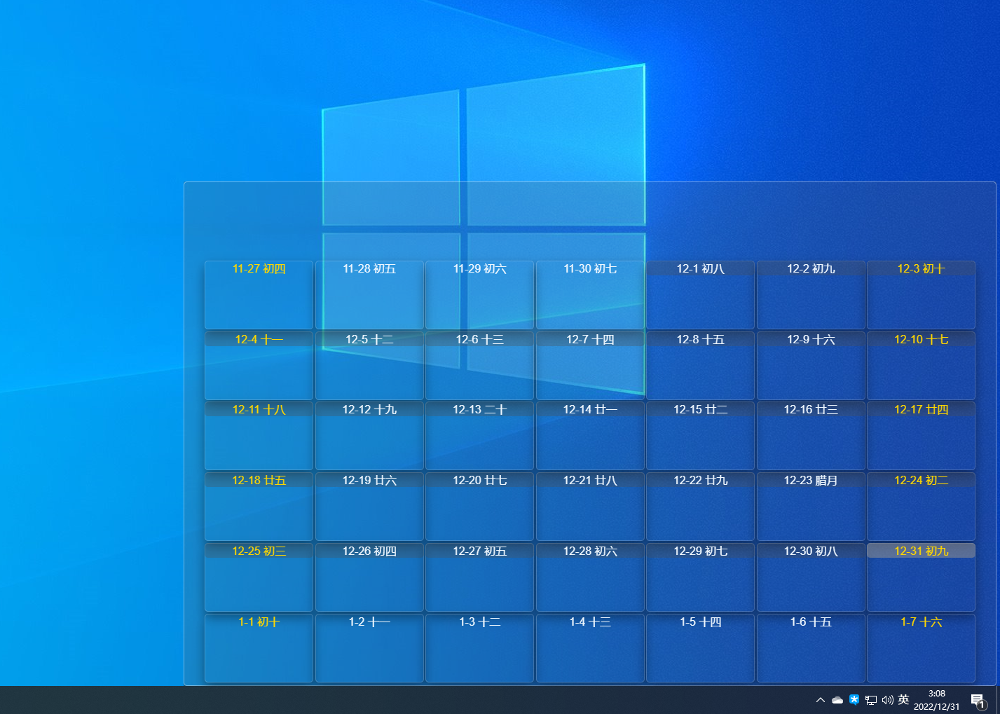

简单的壁纸引擎
这个练手的项目本来是在21年写的，时间久了就荒废了。今年总结时忽然想到之前自己还做过一个建议的壁纸引擎。发现里面有些东西还是值得记录一下的。
NAPI 项目结构
一般我们需要新建一个空白文件夹，如：user32-napi，里面包含：
package.json用于包含项目信息和入口文件src/文件夹下包含C++ 代码index.js入口文件binding.gypC++编译配置项- 依赖项
bindings可以简化index.js
以下是详细代码：
::: code-tabs
@tab package.json
{
"name": "user32-napi",
"version": "1.0.0",
"main": "index.js",
"repository": "git@github.com:12Tall/user32-napi.git",
"author": "12tall <fb.ouyang@outlook.com>",
"license": "MIT",
"dependencies": {
"bindings": "^1.5.0"
}
}@tab index.js
// 导出二进制文件user32 中的所有接口
module.exports = require("bindings")("user32") @tab binding.gyp
{
"targets": [
{
"target_name": "user32", # 此文件会被生成到build/release/ 文件夹下
"sources": ["./src/user32.cc"] # 指定C++ 源码文件
# 后面还可以跟环境变量、编译器选项、平台选择等配置项，可以参考：
# https://zhuanlan.zhihu.com/p/448490760
}
]
}@tab src/user32.cc
/** 本节只包含代码结构，具体工作代码见下文 **/
#include <assert.h>
#include <node_api.h> // 这里最好在IDE 中也指定相关路径，这样的话代码高亮提示更方便
#include <windows.h>
#include <winuser.h>
// 简化NAPI 方法声明的宏
#define DECLARE_NAPI_METHOD(name, func) { name, 0, func, 0, 0, 0, napi_default, 0 }
// NAPI 方法：设置窗口透明
static napi_value setWindowTransparent(napi_env env, napi_callback_info info) {
napi_status status;
napi_value res;
// ...
return res;
}
// ...
// 固定模式，可以在内部暴露更多的方法在外面
static napi_value Init(napi_env env, napi_value exports) {
napi_status status;
napi_property_descriptor desc[] = {
// 在该数组中添加更多的方法
DECLARE_NAPI_METHOD("setWindowTransparent", setWindowTransparent),
};
status = napi_define_properties(env, exports, 5, desc);
assert(status == napi_ok);
return exports;
}
// 固定模式代码
NAPI_MODULE(NODE_GYP_MODULE_NAME, Init):::
主要代码逻辑
在Windows 中，桌面、壁纸、甚至图标都是以窗口的形式渲染的。就壁纸而言，其窗口存在于一个包含有SHELLDLL_DefView 窗口的WorkerW 窗口。Windows 自带的窗口我们无法操作，但是我们可以新建一个新的窗口将壁纸窗口遮蔽掉。然后在该窗口中，我们就可以设置视频、动画等效果。随心所欲。
具体可参见：最近很火的 Wallpaper Engine 的实现原理是怎样的？。练手项目中还包含开机启动和一个简单的日历效果，大致如下：

Win32 编程
操作Windows 窗口需要调用Win32 API 这里仅列举用到的部分API：
static napi_value setWindowTransparent(napi_env env, napi_callback_info info) {
napi_status status;
napi_value res;
size_t argc = 1;
napi_value argv[1];
status = napi_get_cb_info(env, info, &argc, argv, NULL, NULL);
assert(status == napi_ok);
if (argc < 1) {
napi_throw_type_error(env, NULL, "FindWoindow takes only 2 parameters");
return NULL;
}
int32_t handle = 0;
napi_valuetype valType;
status = napi_typeof(env, argv[0], &valType);
assert(status == napi_ok);
if (valType == napi_number) {
status = napi_get_value_int32(env, argv[0], &handle);
assert(status == napi_ok);
}
// https://blog.csdn.net/u011822516/article/details/41946631
// 一种实现窗口透明的方式
bool result = SetWindowLongA((HWND)handle, GWL_EXSTYLE,
GetWindowLongA((HWND)handle, GWL_EXSTYLE) |
WS_EX_LAYERED) != 0;
status = napi_get_boolean(env, result, &res);
assert(status == napi_ok);
return res;
}
// NAPI 方法：更新窗口
static napi_value updateWindow(napi_env env, napi_callback_info info) {
napi_status status;
napi_value res;
size_t argc = 1;
napi_value argv[1];
status = napi_get_cb_info(env, info, &argc, argv, NULL, NULL);
assert(status == napi_ok);
if (argc < 1) {
napi_throw_type_error(env, NULL, "FindWoindow takes only 2 parameters");
return NULL;
}
int32_t handle = 0;
napi_valuetype valType;
status = napi_typeof(env, argv[0], &valType);
assert(status == napi_ok);
if (valType == napi_number) {
status = napi_get_value_int32(env, argv[0], &handle);
assert(status == napi_ok);
}
bool result = UpdateWindow((HWND)handle);
status = napi_get_boolean(env, result, &res);
assert(status == napi_ok);
return res;
}
// 为窗口指定父窗口，用于遮蔽原有的壁纸
static napi_value setParent(napi_env env, napi_callback_info info) {
napi_status status;
napi_value res;
size_t argc = 2;
napi_value argv[2];
status = napi_get_cb_info(env, info, &argc, argv, NULL, NULL);
assert(status == napi_ok);
if (argc < 2) {
napi_throw_type_error(env, NULL, "FindWoindow takes only 2 parameters");
return NULL;
}
int32_t child = 0, parent = 0;
napi_valuetype valType;
status = napi_typeof(env, argv[0], &valType);
assert(status == napi_ok);
if (valType == napi_number) {
status = napi_get_value_int32(env, argv[0], &child);
assert(status == napi_ok);
}
status = napi_typeof(env, argv[1], &valType);
assert(status == napi_ok);
if (valType == napi_number) {
status = napi_get_value_int32(env, argv[1], &parent);
assert(status == napi_ok);
}
HWND hwnd = SetParent((HWND)child, (HWND)parent);
if (hwnd == NULL) {
status = napi_get_null(env, &res);
} else {
status = napi_create_int32(env, (int32_t)hwnd, &res);
}
assert(status == napi_ok);
return res;
}
/**
* HWND FindWindowExA(
* HWND hWndParent, // 父窗口，NULL 表示从Desktop 窗口开始查找
* HWND hWndChildAfter, // 起始子窗口，NULL 表示从第一个子窗口开始
* LPCSTR lpszClass,
* LPCSTR lpszWindow
);
*/
BOOL CALLBACK EnumWindowsProc(HWND hwnd, LPARAM lParam) {
// 1. 查找包含'SHELLDLL_DefView' 子窗口的WorkerW 窗口
HWND p = FindWindowExA(hwnd, NULL, "SHELLDLL_DefView", NULL);
HWND* ret = (HWND*)lParam; // 传入的wallpaper_hwnd 指针
if (p) {
// 将指针指向下一个WorkerW
// 还有一种判断方法，就是下一个WorkerW 的Handle
// 要比包含`SHELLDLL_DefView`的WorkerW 的Handle 大2
*ret = FindWindowExA(NULL, hwnd, "WorkerW", NULL);
}
return true;
}
/**
* https://stackoverflow.com/questions/56132584/draw-on-windows-10-wallpaper-in-c
*/
static napi_value getWallpaperWindow(napi_env env, napi_callback_info info) {
napi_status status;
napi_value res;
// 1. 查找最底层的窗口
HWND progman = FindWindowA("ProgMan", NULL);
// 2. 向最底层窗口创建两个WorkerW 窗口，如果已存在则什么都不会发生
// 网络上大部分代码发送的消息参数都是0x00,0x00。但这会造成一旦WorkerW
// 窗口被不小心销毁，就再也找不到了
// https://gitlab.com/kelteseth/ScreenPlay/-/blob/master/ScreenPlayWallpaper/src/winwindow.cpp#L387
// 而相应的，在监视窗口消息时，应使用对应版本的spy++，否则是拦截不到消息的
// 需要注意的是，在程序异常退出时会有边框遗留在壁纸上
SendMessageTimeout(progman, 0x052C, 0x0D, 0x01, SMTO_BLOCK, 1000, nullptr);
// SendMessage(progman, 0x052C, 0x0D, 0x01);
// 3. 枚举所有窗口，直到发现包含'SHELLDLL_DefView'
// 子窗口的WorkerW，他下面的WorkerW 就是我们需要的WorkerW
HWND wallpaper_hwnd = nullptr;
EnumWindows(EnumWindowsProc,
(LPARAM)&wallpaper_hwnd // 被传入回调函数的参数
);
status = napi_create_int32(env, (int32_t)wallpaper_hwnd, &res);
assert(status == napi_ok);
return res;
}
// string|NULL, string|NULL
static napi_value findWindow(napi_env env, napi_callback_info info) {
napi_status status;
napi_value res;
size_t argc = 2;
napi_value argv[2];
status = napi_get_cb_info(env, info, &argc, argv, NULL, NULL);
assert(status == napi_ok);
if (argc < 2) {
napi_throw_type_error(env, NULL, "FindWoindow takes only 2 parameters");
return NULL;
}
size_t len = 0;
char *className = NULL, *windowName = NULL;
napi_valuetype valType;
status = napi_typeof(env, argv[0], &valType);
assert(status == napi_ok);
if (valType == napi_string) {
// 获取字符串长度
status = napi_get_value_string_utf8(env, argv[0], NULL, 0, &len);
assert(status == napi_ok);
className = (char*)calloc(++len, sizeof(char));
status = napi_get_value_string_utf8(env, argv[0], className, len, &len);
assert(status == napi_ok);
}
status = napi_typeof(env, argv[1], &valType);
assert(status == napi_ok);
if (valType == napi_string) {
status = napi_get_value_string_utf8(env, argv[1], NULL, 0, &len);
assert(status == napi_ok);
windowName = (char*)calloc(++len, sizeof(char));
status = napi_get_value_string_utf8(env, argv[1], windowName, len, &len);
assert(status == napi_ok);
}
HWND hWnd = FindWindowA((LPCSTR)className, (LPCSTR)windowName);
status = napi_create_int32(env, (int32_t)hWnd, &res);
assert(status == napi_ok);
free(className);
free(windowName);
return res;
}
static napi_value Init(napi_env env, napi_value exports) {
napi_status status;
napi_property_descriptor desc[] = {
DECLARE_NAPI_METHOD("findWindow", findWindow),
DECLARE_NAPI_METHOD("getWallpaperWindow", getWallpaperWindow),
DECLARE_NAPI_METHOD("setParent", setParent),
DECLARE_NAPI_METHOD("updateWindow", updateWindow),
DECLARE_NAPI_METHOD("setWindowTransparent", setWindowTransparent),
};
status = napi_define_properties(env, exports, 5, desc);
assert(status == napi_ok);
return exports;
}
NAPI_MODULE(NODE_GYP_MODULE_NAME, Init)编译过程
编译过程要在子项目user32-napi 中完成，首先要安装配置node-gyp：
cd user32-napi
npm install -g node-gyp
node-gyp install # 安装头文件和静态库，否则可能会包依赖库损坏
node-gyp configure # 生成编译配置项
node-gyp build # 编译项目
cd ..
npm install需要注意的是，在项目打包或者编译时，要注意目标平台的选择，比如在x64 编译下的.node 文件是不能被32 位的应用程序调用的。这里附一条编译的指令解析
vite build # 构建前端
# 构建后端，在64 位平台下、或者默认可以省略掉--arch=ia32， 否则有可能会报.node 文件的异常
electron-packager . vite-electron-vue-template --platform=win32 --arch=ia32 --icon=./app.ico --out=./out --asar --app-version=0.0.1 --overwrite 2022-12-30 山东